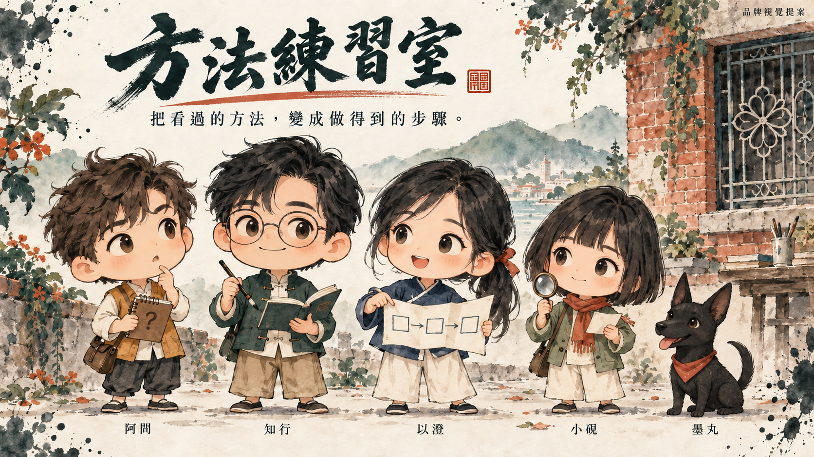
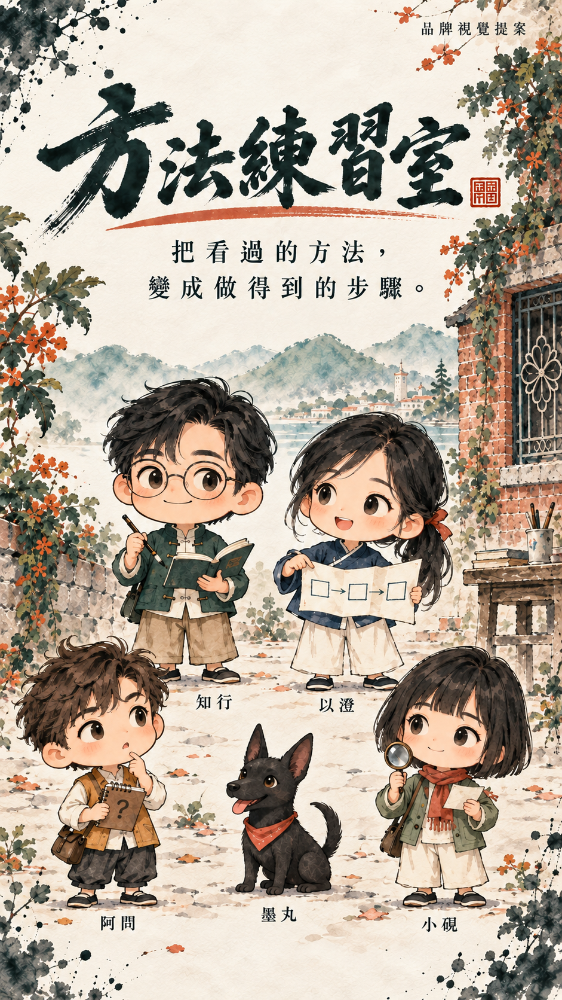

知行
把方法做出來
圓框眼鏡、墨綠短褂與隨身筆記。引導第一步，留下可看見的成果。
宣紙留白、墨綠筆觸、朱紅印記，搭配頭身約 1：1 的四位人物，以及一隻臺灣犬。讓每次找方法、拆步驟、查來源與動手練習，都有熟悉的夥伴陪著。
寵物已確定為臺灣犬；角色名字與服裝細節暫定。本頁是品牌提案，正式網站尚未套用。


四位人物共用約兩頭身比例，角色分工可以跨 AI、英文與閱讀主題使用。
把方法做出來
圓框眼鏡、墨綠短褂與隨身筆記。引導第一步，留下可看見的成果。
把方法拆清楚
朱紅髮帶、靛藍上衣與步驟紙。陪讀者看流程、找順序、排練習。
把卡點問出來
蓬鬆短髮、淡赭背心與問題小本。提出讀者可能遇到的疑惑。
把出處查明白
俐落短髮、灰綠外套與放大鏡。分清來源原意、編輯補充與限制。
把練習陪下去
黑色短毛、三角立耳、楔形臉與朱紅領巾。出現在小提醒、收藏與練習回饋。